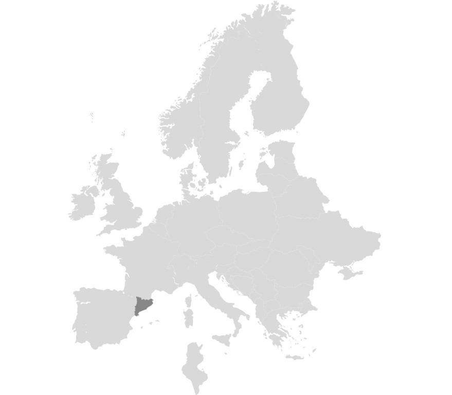
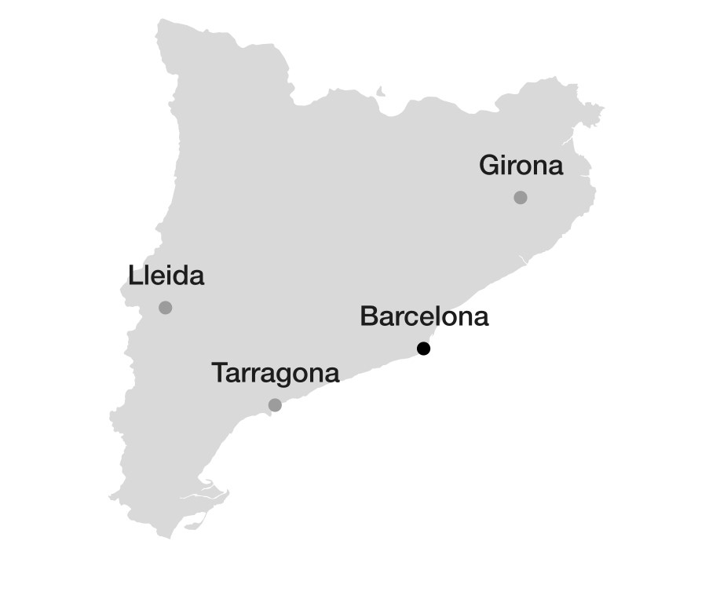

MAIN INFO
Barcelona is the capital city of Catalonia. It's located on the central Catalan coast. With a population of 1.6 million within city limits, its urban area extends to numerous neighbouring municipalities becoming a population around to 4.8 milion people. It is one of the largest metropolises on the Mediterranean Sea, located on the coast between the mouths of the rivers Llobregat and Besòs, and bounded to the west by the Serra de Collserola mountain range.
Founded as a Roman city, in the Middle Ages Barcelona became the capital of the County of Barcelona. After joining with the Kingdom of Aragon to form the confederation of the Crown of Aragon, Barcelona, which continued to be the capital of the Principality of Catalonia, became the most important city in the Crown of Aragon and the main economic and administrative centre of the Crown.
Barcelona is also known as an important transport hub, being its airport a place that handles over 50 million passengers per year since 1992 Summer Olympics. Barcelona's port isn't less relevant due to it's the busiest passenger port of whole Europe.
| Catalunya a Europa | Barcelona a Catalunya |
|---|---|
|  |  |